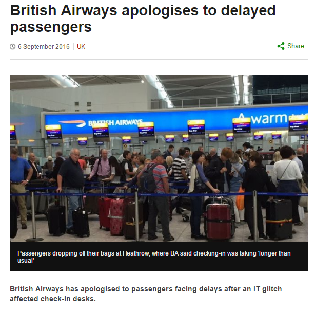

Operational Excellence - Day 1
Today we will cover ....
Introductions
Health Warning and Overview
Discuss the Meaning of Availability
Top Ten Causes of Unavailability
http://martinsumner.github.io/presentations/operations_iwc_d1.html#/
About Me
'94 - '97: Local IT Support
'97 - '03: Network, Security then Applications
'03 - '05: Spine I - Shock and Awe
'05 - '08: Mini projects and discovery
'08 - '11: National Monitoring Service
'11 - '16: Spine II - Redemption
'16 - '20: Product development
A Health Warning - The Agile Journey
In the beginning there was an Act of Rebellion
The manifesto didn't just state what we would do ...
... it stated the negative practices we would no longer do
There was a view of normal...
... which people sensed wasn't working
Someone noticed humans were involved - and they may not be perfect
Lake wobegon principle
Hindsight bias
Confirmation bias
Dissonance reduction
Sunk cost effects
Zero-risk bias
Understanding biases shaped our understanding
Of why we previously thought another way would work
Of the traps that lay ahead if we took a new path
A parallel in history is detected
From Frederick Taylor and Scientific Management
To Deming
To Ohno and TPS
To Poppendieck
Toyota Production System - Timeline & Copycats
“ You need to change the way you think. You need to change the way you look at things ”
Taiichi Ohno
What happened post the Agile revolution?
A fundamental change driven by explosion of kaizen?
An epidemic of ineffective stand-ups?
A constant dilution of ideals as cognitive biases went unchallenged?
Operational Excellence Perspectives
Spine I vs Spine II
Spine II vs Google
Amazon/Netflix/Github vs Spine II
What might we learn about Operational Excellence
To be in a position to challenge conventional wisdom
To understand the depth and breadth of the problem
To be open to the possibility of dramatic improvement
To search beyond technology for answers
BUT STILL NO SILVER BULLET
Agenda
Session 1: Availability
Session 2: Examples
Session 3: Observability
Session 4: Patterns and Anti-Patterns
Nines
Over to you ... three simple questions
How do you measure nines?
How do you determine the required number of nines?
How do you determine if you can meet those nines?
...
Google Meaningful Availability
“ People told me technology changes would make things easier and give me more leisure time, but technology changes just mean customers demand things sooner and understand failure less ”
Anon
“ Item #1 for the agenda should be "what are you going to do when Spine fails?" ”
Anon
“ In a real business situation, many organizations will throw up their hands and say, we will wait for a complaint and do a manual adjustment. Airlines are a case in point. If an airline system loses a reservation ... this will be detected when the passenger attempts to check in. All airlines have procedures to handle this kind of problem ... It is therefore not worthwhile to implement complex software processes to guarantee no loss of records. ”
IT Architectures and Middleware, 2004
BA Apologises
Google Apologises

Pre-live Gates
Is our target to overcome each hurdle?
Is our target to assess ourselves overcoming hurdles?
Is our target to improve how we overcome hurdles?
Top Ten Causes of Unavailability
A Guiding Hypothesis
Most unavailability is related to recovery time ...
... not frequency of incidents
Almost everyone can handle known knowns competently
Top ten is ordered by the Spine experience
10 - Domino Failure
9 - Noticing you're Live
8 - Guess-Fix Debt
7 - Never-Fail Components
6 - Novelty in Live
5 - Competitive Resilience
4 - Unexpected Growth
3 - Catchphrase Incident Management
2 - Denial
1 - Botched Transition
Some Fun Problems to Ponder
OpenOffice won't print on Tuesday
I can't send email more than 500 miles
My password doesn't work when standing up
Challenge to take away
Out of Memory - Attempt to Allocate 1212498244 bytes